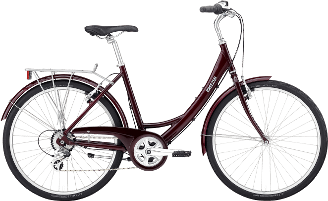

This comprehensive project entails the use of SQL, Pandas, Excel and Tableau to
determine if a new display banner on the homepage about the new food and drink category offerings will generate more convertions,
boost customer spend and as a result improve sales

In this project, excel was used to clean data on bike purchases and further used pivot table, xlookup and other formula to analysis customer's
purchase behaviors across different demographics

This project explored Arsenal performances compared to the league leader and also explore some Premier League data set

This dashboard shows insight into Globox e-commerce conversion rates and average spent in relation to other metrics